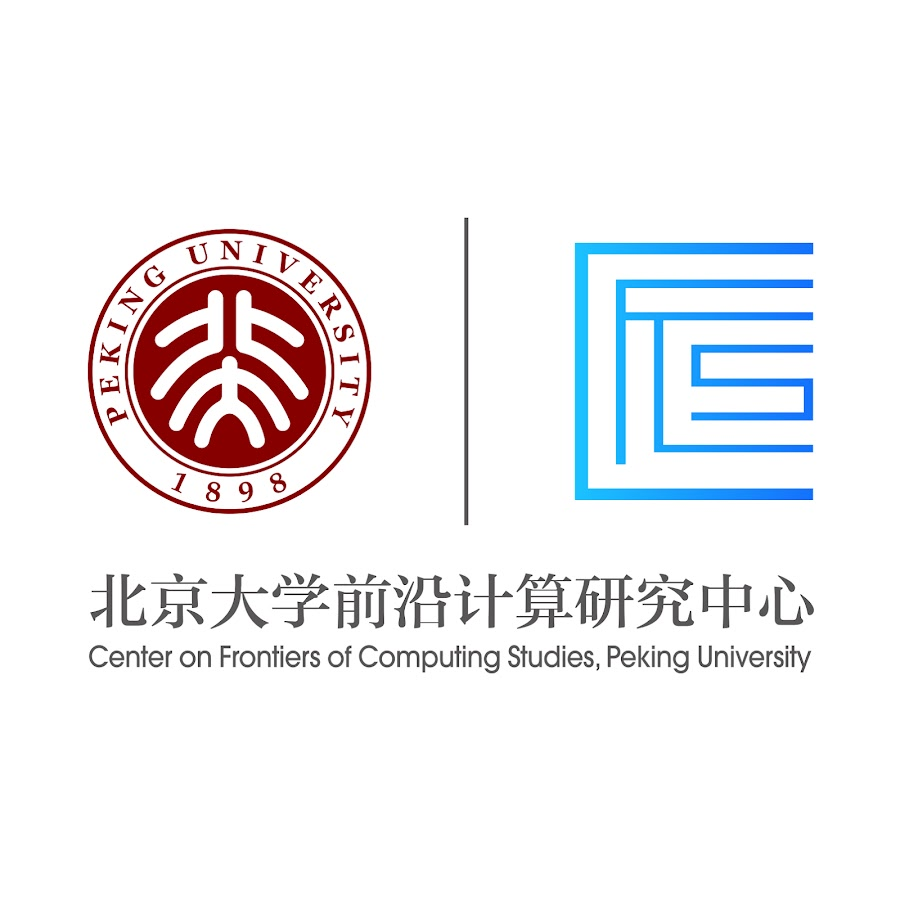
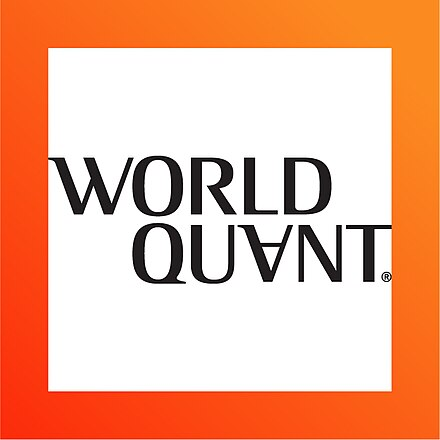

Tan-Dzung (Chris) Do
Đỗ Tấn Dũng · 杜迅勇
About
I'm a researcher at VinRobotics, working on Embodied AI with Prof. An Thai Le. I graduated from the School of Computer Science, Peking University, where I worked with Prof. He Wang.
After graduation, I interned in the Bay Area, taking part in humanoid loco-manipulation projects with Prof. Yue Wang (USC). During my time at Galbot, I was also a member of a joint humanoid research lab co-led by Prof. Li Yi (Tsinghua). Long ago, I had a wonderful time interning at a quant firm with Dr. Luan Tran.
00-1 USC PSI Lab 2025 — 2026
Research Intern · Bay Area, US
Humanoid whole-body loco-manipulation. Advisor: Prof. Yue Wang.
Visit lab →00-2 Galbot 2023 — 2025
00-3 CFCS, Peking University 2023 — 2025

Research Intern · Beijing, CN
Center on Frontiers of Computing Studies. Advisor: Prof. He Wang.
Visit CFCS →00-4 WorldQuant 2022 — 2023

Education

Awards & honors
- IEEE ICRA Travel Grant2025
- Peking University Excellent Academic Award2024
- Beijing Government Scholarship ×32022–24
- Vietnam–Russia Government Scholarship2018
- Vietnam Mathematical Olympiad, 3rd place2017
Service & teaching
- Teaching Assistant — Robot Vision and Learning: From a Perspective of Embodied AI2024
- Reviewer — CoRL, ICRA2026
- Ex-President — Vietnamese Student Association at Peking UniversityPast